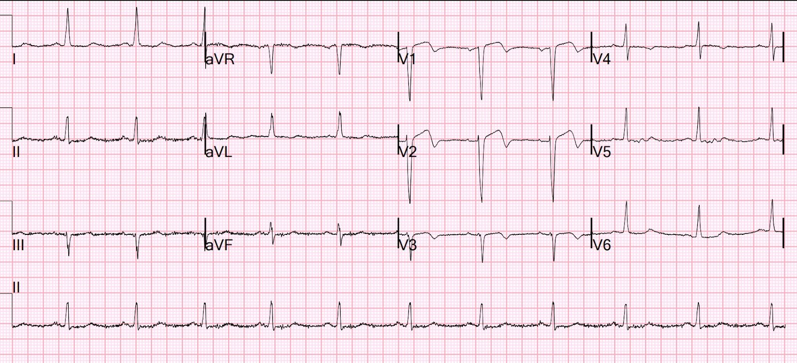
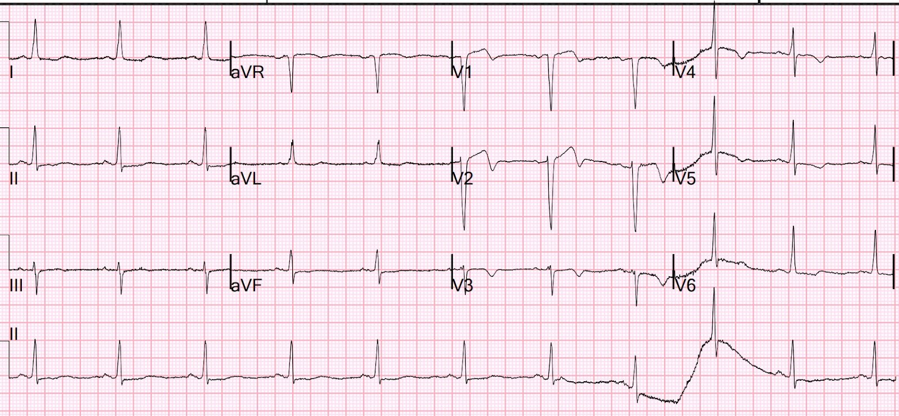
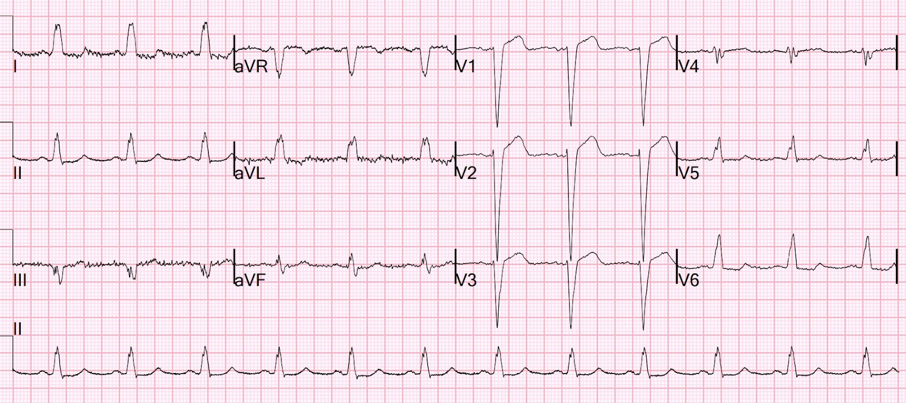
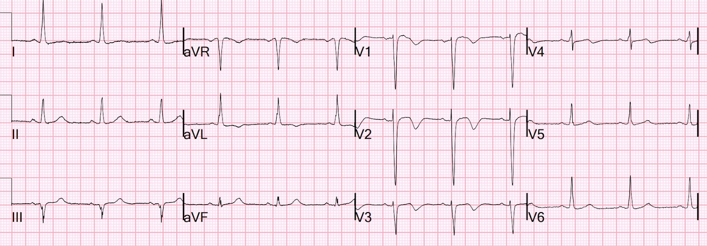
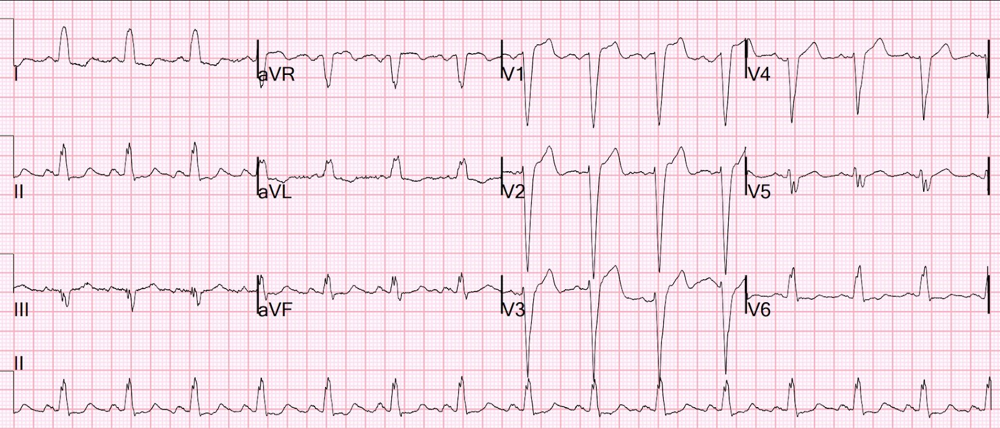
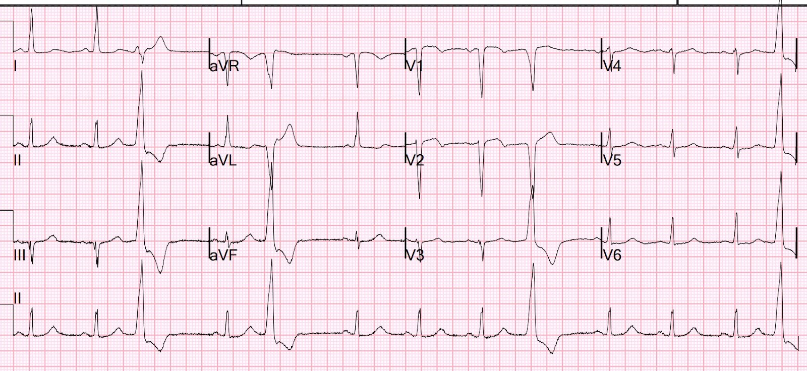
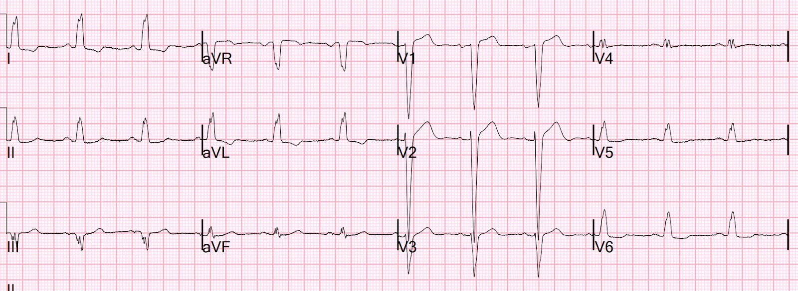
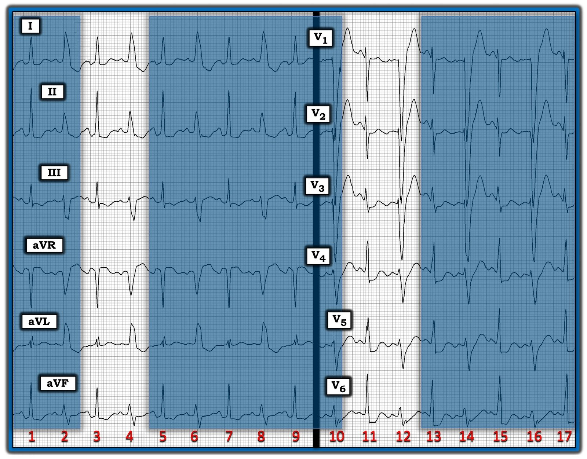

09/11/2023 — Giải thích điện tâm đồ này trong bối cảnh đau ngực đang diễn ra, troponin tăng nhẹ không có thay đổi động học (delta), thủ phạm là RCA, và các điện tâm đồ trước đây có LBBB
Bản dịch tiếng Việt của bài "Explain this ECG in the context of active chest pain, slightly elevated troponin without a delta, RCA culprit, and previous with LBBB" – Dr. Smith’s ECG Blog. Giữ nguyên toàn bộ 9 hình ảnh của bản gốc.
Một bệnh nhân nữ ở độ tuổi 60 nhập viện vì đau ngực khi gắng sức trong 3 ngày. Bà có nghiệm pháp gắng sức dương tính gần đây, cách khoảng một tuần. Mức độ đau 8/10 và liên tục.
Bà bị khó thở và nặng ngực khi gắng sức tăng dần, chủ yếu khi leo nhiều tầng cầu thang, từ đầu tháng Chín. Bà được làm siêu âm tim gắng sức vào giữa tháng Mười, gắng sức gần 7 phút theo phác đồ Bruce chuẩn và có đau thắt ngực điển hình kèm khó thở.
Siêu âm tim nền cho thấy rối loạn chức năng tâm thu thất trái mức độ trung bình, không có rối loạn vận động thành.
Trong 1 tuần qua, đau ngực khi gắng sức của bà nặng lên cả về cường độ lẫn ngưỡng khởi phát.
Bà bị đau lúc tăng lúc giảm, kể cả khi nghỉ, trong 24 giờ qua. Đau được mô tả là âm ỉ, kiểu đè ép ở vùng sau xương ức, lan lên cổ, kèm tê rần bàn tay trái. Mức độ đau được đánh giá 8/10. Bà có kèm khó thở.
Mốc thời gian ban đầu (time zero), đang đau


Nhịp xoang với QRS hẹp bình thường
Sóng T đảo ngược trông giống sóng Wellens ở V1-V3 (phân bố này hơi bất thường).
Nhưng bệnh nhân đang đau ngực.
Đây có phải hội chứng Wellens không?
Nếu đúng vậy, người ta sẽ chờ đợi rằng đau ngực đang giảm dần hoặc đã hết & động mạch thủ phạm sẽ là LAD.
Thời điểm 17 phút


Không khác nhiều
Một tháng trước đó


Đây là blốc nhánh trái (LBBB) không có bất kỳ dấu hiệu thiếu máu cục bộ nào.
Hóa ra bà ở trong tình trạng LBBB phần lớn thời gian (xem các điện tâm đồ bên dưới)
Chuyện gì đang xảy ra???
Troponin I độ nhạy cao (hs troponin I) lần đầu trả về tăng, ở mức 48 ng/L (giới hạn trên tham chiếu – URL – ở nữ là 16)
Vì đau ngực đang diễn ra, điện tâm đồ bất thường và troponin tăng ở một bệnh nhân có bệnh sử rất gợi ý hội chứng vành cấp (ACS), mọi người đã thống nhất rằng bà nên được đưa vào phòng thông tim (cath lab) tương đối khẩn cấp
hs-troponin I sau 2 giờ là 51 ng/L (không thay đổi thực sự)
Chụp mạch vành bắt đầu khoảng 3 giờ sau khi nhập viện:
RCA/RPAV: hẹp 90% đoạn xa RCA/nhánh nhĩ thất sau phải (RPAV). Tổn thương ở đoạn xa RCA: hẹp 90% giảm còn 0%. Trước thủ thuật ghi nhận dòng chảy TIMI III. Sau thủ thuật TIMI III.
Nhánh trung gian (ramus): Có một nhánh trung gian (ramus intermedius) khẩu kính lớn, có phân nhánh
LAD là mạch khẩu kính trung bình, chạy tới mỏm, có mảng xơ vữa lan tỏa mức độ nhẹ đến trung bình ở đoạn giữa. D1 là mạch khẩu kính trung bình, các nhánh chéo đoạn xa có khẩu kính nhỏ
Siêu âm tim
Kích thước buồng và độ dày thành thất trái bình thường. Phân suất tống máu thất trái ước tính giảm nhẹ, khoảng 45%. Có giảm động vùng dưới vách.
Vậy đây KHÔNG phải LAD và KHÔNG phải hội chứng Wellens.
Điều gì giải thích sóng T đảo ngược ở V1-V3?
Trí nhớ tim (Cardiac Memory):
Sau khi chuyển từ LBBB hoặc nhịp tạo nhịp trở lại dẫn truyền bình thường, sóng T đảo ngược là thường gặp và được gọi là “trí nhớ tim” (“Cardiac Memory”)
Xem bài này và phần giải thích:
Đau ngực và LBBB. LBBB biến mất và có sóng T đảo ngược ở V1-V3.
Các điện tâm đồ trước đây của bệnh nhân này
30 tháng trước:


QRS hẹp với sóng T đảo ngược ở V1-V3
30 tháng trước, trong cùng tuần đó:


Một blốc nhánh trái có hình dạng bình thường
12 tháng trước:


Phức bộ hẹp
11 tháng trước


Blốc nhánh trái có hình dạng bình thường
Trí nhớ tim
Có một cách giải thích khác, nhiều khả năng hơn, cho sóng T đảo ngược này: “trí nhớ tim” (“Cardiac Memory”). Trí nhớ tim (CM) đã được mô tả từ vài thập kỷ nay. Hiện tượng này thường gặp nhất sau khi ngừng tạo nhịp và các nguyên nhân khác gây khử cực bất thường như blốc nhánh trái. Sau khi tình trạng khử cực bất thường hết, có thể xuất hiện sóng T đảo ngược thoáng qua kéo dài từ vài giờ đến vài ngày (những sóng T này là “trí nhớ” của tim về dẫn truyền bất thường trước đó). Hiện tượng này còn chưa được hiểu rõ, nhưng có liên quan đến “tái cấu trúc điện học thoáng qua”.
http://www.heartrhythmjournal.com/article/S1547-5271%2807%2900801-6/abstract
Shvilkin và cs. đã mô tả cách phân biệt CM với thiếu máu cục bộ:
http://circ.ahajournals.org/cgi/content/full/111/8/969
Tóm lại, sự kết hợp của:
(1) TaVL dương (như trong ca này) và
(2) sóng T dương hoặc đẳng điện ở chuyển đạo I (như trong ca này) và
(3) sóng T đảo ngược tối đa ở chuyển đạo trước tim lớn hơn sóng T đảo ngược ở chuyển đạo III (như ở đây: T đảo ngược tối đa ở chuyển đạo trước tim nằm ở V2, sâu 4,5 mm, còn sóng T đảo ngược ở chuyển đạo III chỉ 2,5 mm) có
độ nhạy 92% và độ đặc hiệu 100% đối với CM, giúp phân biệt CM với sóng T đảo ngược ở chuyển đạo trước tim do thiếu máu cục bộ.
Như vậy, một bác sĩ rất am hiểu có thể phân biệt các điện tâm đồ này với điện tâm đồ của một bệnh nhân LBBB bị nhồi máu cơ tim:
1) không có đồng hướng
2) không có ngược hướng quá mức
3) LBBB kèm nhịp nhanh, có lẽ liên quan tần số
4) sóng T đảo ngược xuất hiện sau đó, mà theo Shvilkin và cs., là chẩn đoán trí nhớ tim. Đây KHÔNG phải hội chứng Wellens.
Ca này phù hợp với định nghĩa trí nhớ tim nêu trên.

===================================
BÌNH LUẬN CỦA TÔI, bởi KEN GRAUER, MD (9/11/2023):
===================================
Tôi thấy phần trình bày ca hôm nay của Dr. Smith rất sâu sắc về những thay đổi hình dạng sóng ST-T đôi khi có thể gặp, tùy thuộc vào việc có hay không có LBBB (blốc nhánh trái – Left Bundle Branch Block).
Blốc nhánh từng lúc (Intermittent Bundle Branch Block):
Chúng ta quen nhìn thấy các rối loạn dẫn truyền (tức là RBBB, LBBB, IVCD, blốc phân nhánh) xảy ra ở mọi nhát bóp. Tuy vậy — rối loạn dẫn truyền đôi khi có thể “liên quan tần số”. Điều này thường xảy ra khi tần số tăng — QRS giãn rộng khi tần số tăng tới một mức nhất định — rồi hẹp lại sau khi tần số chậm lại (Để biết thêm về hiện tượng BBB liên quan tần số — Xem Bình luận của tôi trong bài ngày 22 tháng Tư năm 2020 trên Dr. Smith’s ECG Blog).
- Rối loạn dẫn truyền cũng có thể xảy ra từng lúc. Thường thì điều này xảy ra với một khoảng thời gian “cố định” giữa các nhát dẫn truyền bình thường và các nhát rộng hơn biểu hiện rối loạn dẫn truyền (tức là thường gặp nhất là rối loạn dẫn truyền từng lúc xuất hiện cứ mỗi nhát thứ 2, mỗi nhát thứ 3 hoặc mỗi nhát thứ 4).
- Đôi khi — rối loạn dẫn truyền từng lúc có thể cho thấy sự luân phiên ngẫu nhiên giữa dẫn truyền bình thường và dẫn truyền bị suy giảm, không có khoảng “cố định” nào giữa các nhát hẹp và các nhát rộng hơn (Xem Bình luận của tôi trong bài ngày 25 tháng Sáu năm 2020 trên Dr. Smith’s ECG Blog).
Hiệu ứng “trí nhớ”:
Ca hôm nay đặc biệt thú vị — vì vai trò tiềm tàng của “trí nhớ“ trong việc tạo ra những thay đổi sóng ST-T chỉ biểu hiện rõ sau khi BBB biến mất. Như Dr. Smith đã nêu — Chúng ta biết rằng bệnh nhân hôm nay “ở trong tình trạng LBBB phần lớn thời gian”. Tuy nhiên, chúng ta không biết rõ bao nhiêu phần thời gian của bà là LBBB kéo dài (dù bà có thể ở trong tình trạng này đủ lâu để tạo ra hiệu ứng trí nhớ — với các bất thường sóng ST-T hệ quả tồn tại rất lâu sau khi dẫn truyền bình thường với QRS hẹp đã trở lại). Chúng ta cũng không biết liệu sóng T đảo ngược ở vùng trước thấy trên bản ghi ban đầu hôm nay có bao giờ hết đi trong những giai đoạn dẫn truyền bình thường (QRS hẹp) kéo dài hay không.
- Như Dr. Smith đã nêu — mặc dù sóng ST-T có hình dạng giống Wellens ở các chuyển đạo V1 đến V3 trên bản ghi ban đầu hôm nay — điện tâm đồ ban đầu hôm nay không đủ tiêu chuẩn “hội chứng Wellens” vì: i) Bệnh nhân đang có đau ngực liên tục, đang diễn ra (trong khi ở hội chứng Wellens — đau ngực đã hết vào lúc ghi điện tâm đồ); và, ii) Phân bố thay đổi sóng ST-T thấy trên điện tâm đồ ban đầu hôm nay khác với phân bố thường lùi về các chuyển đạo trước tim kế tiếp trong dãy, vốn điển hình hơn của Wellens.
- Xin nhấn mạnh: Bất kể sóng T đảo ngược ở vùng trước trên điện tâm đồ ban đầu — chỉ định thông tim là rõ ràng trong ca hôm nay, vì bệnh nhân đau ngực kéo dài với troponin tăng, và LBBB có thể do thiếu máu cục bộ gây ra.
Điều đôi khi có thể học được từ dẫn truyền BBB từng lúc!
Trái ngược với ca hôm nay — tôi xin đưa ra bản ghi này của một phụ nữ 60 tuổi bị khó thở, với điện tâm đồ ở Hình 1 cho thấy dẫn truyền LBBB cách một nhát.
- Để thuận tiện so sánh giữa các nhát dẫn truyền bình thường so với các nhát dẫn truyền kèm LBBB — tôi đã làm mờ phần lớn bản ghi (Xem toàn bộ ca bệnh TẠI ĐÂY).
- Các nhát #3 và 11 được dẫn truyền với phức bộ QRS hẹp — và cho thấy rõ ST chênh xuống lan tỏa kèm ST chênh lên ở chuyển đạo aVR, phù hợp với DSI (thiếu máu cục bộ dưới nội tâm mạc lan tỏa – Diffuse Subendocardial Ischemia).
- Các nhát #4 và 12 cho thấy dẫn truyền LBBB — mà ngoại trừ ST chênh xuống quá mức ở chuyển đạo V6 (ở nhát #12) — thì không cho thấy rõ các bất thường sóng ST-T ở những nhát xen kẽ khi có dẫn truyền LBBB.
- ĐIỀU CỐT LÕI: Vì rối loạn dẫn truyền làm thay đổi trình tự khử cực thất — trình tự tái cực thất cũng sẽ thay đổi! Do đó — đánh giá thay đổi sóng ST-T khi có rối loạn dẫn truyền luôn luôn khó khăn hơn (đặc biệt với LBBB — vốn làm thay đổi vectơ khử cực thất ban đầu). Thay vì một hiệu ứng “trí nhớ” — tôi nghĩ ST chênh xuống lan tỏa, bất thường rõ rệt, thấy ở cách một nhát trong lúc dẫn truyền bình thường ở Hình 1 nhiều khả năng là biểu hiện của DSI mà không lộ ra trong lúc dẫn truyền LBBB.

